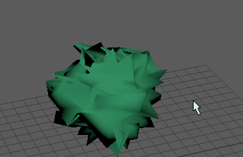

提示： 可以使用通道控制编辑器（选择“窗口 > 常规编辑器 > 通道控制”(Windows > General Editors > Channel Control)）在通道盒中控制要列为可设置关键帧属性（通道）的属性。
创建 Delta Mush 变形器
- 选择要软化的点或整个对象。
提示： 在应用 Delta Mush 之前，确保网格处于静止状态。如有必要，请关闭链中的任何变形器封套，然后在创建变形器后重新启用。
- 选择
“变形 > (创建) Delta Mush 变形器”(Deform > (Create) Delta Mush Deformer)
>
 。
。
- 单击“基本”(Basic)和“高级”(Advanced)选项卡，然后设定创建选项。

请参见 Delta Mush 变形器选项和高级变形器选项。